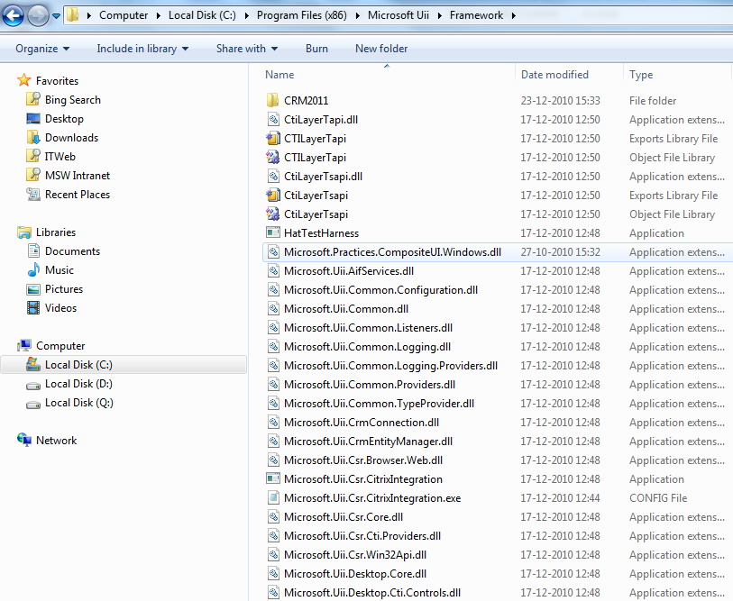

Microsoft UII for Microsoft Dynamics CRM uses the Microsoft patterns & practices Composite UI Application Block for messaging, visual containment, application loading, state management, and so on. The Composite UI Application Block is designed for applications based on Windows Forms, but UII requires the Composite UI Application Block extensions for Windows Presentation Foundation (WPF) that are implemented by integrating the WPF CAB libraries available from CodePlex.
To integrate the WPF CAB libraries with the Composite UI Application Block
- Download the WPF CAB source code from the WPF layer for CAB page on CodePlex.
- Extract the contents of the compressed file to a folder (for example, C:\WPFCAB Source\).
- Open the solution file CompositeUI solution file located in the WPFCAB source code folder.
- Expand the CompositeUI.Windows project.
- In the References folder of the project, remove the references for CompositeUI and ObjectBuilder.
- Right-click the References folder and then click Add Reference.
- Click Browse, and then select the files Microsoft.UII.Practices.CompositeUI.dll and Microsoft.UII.Practices.ObjectBuilder.dll in the folder [Install Directory]\Framework.
- In the WorkSpaces folder of the project, open the ZoneWorkspace.cs file.
- Comment the following method.
C#  Copy Code
Copy Code
void IComposableWorkspace<FrameworkElement, ZoneSmartPartInfo>.RaiseSmartPartActivating(WorkspaceCancelEventArgs e) { OnSmartPartActivating(e);} - Change the return types of the following methods from bool to void, as shown in the following table.
Method
Edited method
public bool Activate(object smartPart)
{
return _composer.Activate(smartPart);
}
public void Activate(object smartPart)
{
_composer.Activate(smartPart);
}
public bool Show(object smartPart, ISmartPartInfo smartPartInfo)
{
return _composer.Show(smartPart, smartPartInfo);
}
public void Show(object smartPart, ISmartPartInfo smartPartInfo)
{
_composer.Show(smartPart, smartPartInfo);
}
public bool Show(object smartPart)
{
return _composer.Show(smartPart);
}
public void Show(object smartPart)
{
_composer.Show(smartPart);
}
- Repeat steps 9 and 10 for the files DeckWorkspace.cs and TabWorkspace.cs.
- Compile the CompositeUI.Windows solution. The build process creates the Microsoft.Practices.CompositeUI.Windows.dll file in the build output folder.
- Copy the DLL file to the UII framework folder ([Install Directory]\Microsoft Uii\Framework), as shown in the following illustration.
 Note:
Note:Note: Copy Microsoft.Practices.CompositeUI.Windows.dll to the framework folder [Install Directory]\Microsoft Uii\Framework. This is a modified version of the WPFCAB assembly. 
- Compile the Integrated Agent Desktop project.